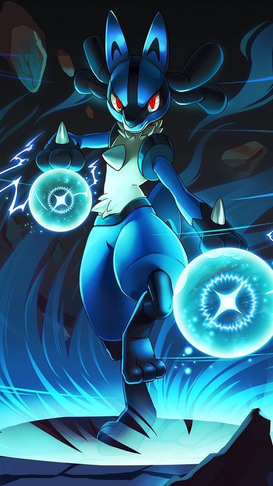

|  | BIOGRAFIA |
|---|---|
|
Lucario é um Pokémon raro capaz de sentir e interpretar a aura a energia vital de todos os seres vivos.
Leal, disciplinado e profundamente honrado, ele treina constantemente para controlar suas emoções e ampliar
sua conexão espiritual. Muitas vezes atua como protetor, mensageiro ou guardião, guiando aqueles de coração
puro. Sua postura calma esconde um instinto guerreiro feroz quando alguém ameaça a paz. | |
| ARMAS | |
|
Energia de Aura: Lucario luta com artes marciais avançadas reforçadas pela aura. Manipulação da Aura: Consegue sentir intenções, prever movimentos e concentrar energia espiritual em ataques. | |
| Habilidades | |
|
Aura Sphere: Um projétil de energia pura que nunca erra o alvo. Bone Rush: Cria um bastão de aura para atacar com rapidez e precisão. Extreme Speed: Um movimento em alta velocidade que permite golpes quase instantâneos. |